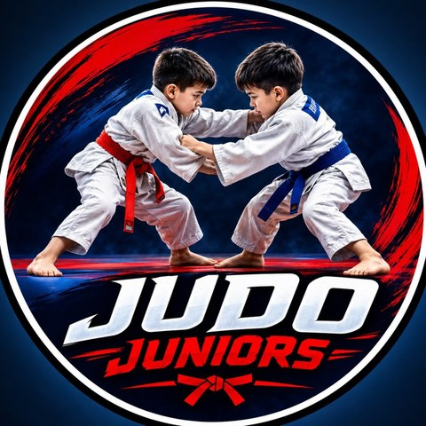

JUDOJUNIORS
Bolalar uchun dzyudo mashg'ulotlari 🥋
YouTube kanalimizMashg'ulot videolarini ko'ringBosing — YouTube ilovasida ochiladi

Bolalar uchun dzyudo mashg'ulotlari 🥋
YouTube kanalimizMashg'ulot videolarini ko'ringBosing — YouTube ilovasida ochiladi